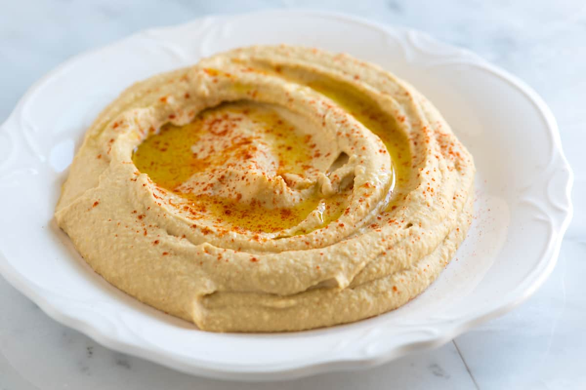
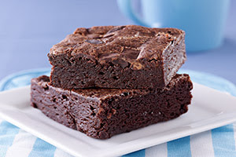
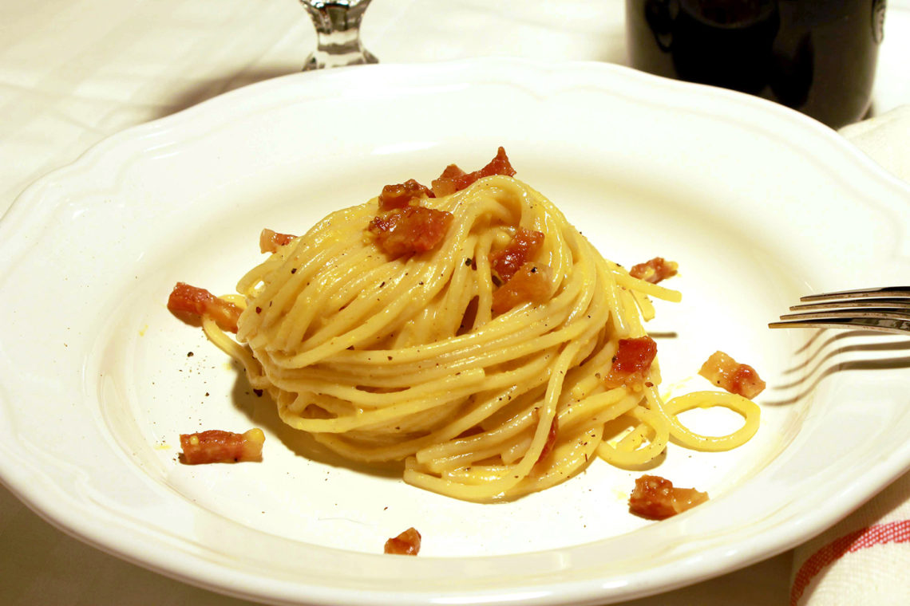
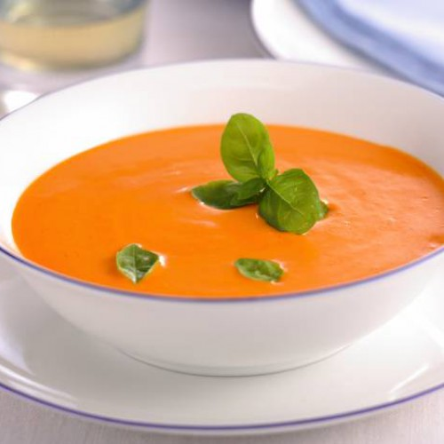
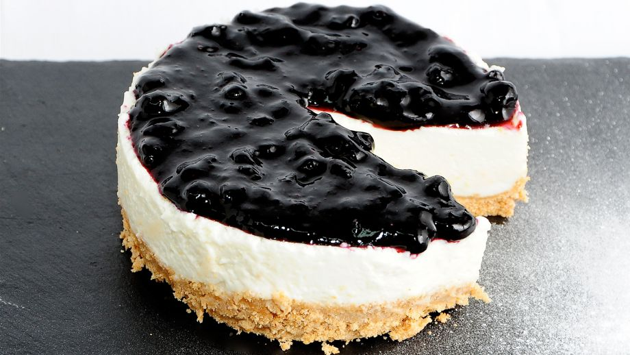

Recetas
Nuestra lista personal de recetas... ¡Prueba alguna!
-
Lasaña de Carne
- Dificultad: Alta
- Raciones: 6 personas
- Tiempo total: 1 hora
Una deliciosa lasaña con carne picada y bechamel, perfecta para una comida en familia.

-
Sopa de Pollo
- Dificultad: Fácil
- Raciones: 4 personas
- Tiempo total: 40 minutos
Una sopa casera reconfortante con pollo y verduras, ideal para los días fríos.
-
Crepes Dulces
- Dificultad: Media
- Raciones: 4 personas
- Tiempo total: 30 minutos
Deliciosos crepes con un relleno dulce, perfectos para el desayuno o merienda.
-
Hummus
- Dificultad: Fácil
- Raciones: 4 personas
- Tiempo total: 15 minutos
Un sabroso hummus, hecho con garbanzos, tahini y ajo, perfecto para acompañar pan o verduras.

-
Brownie de Chocolate
- Dificultad: Media
- Raciones: 6 personas
- Tiempo total: 45 minutos
Un delicioso brownie de chocolate, suave y esponjoso, perfecto para los amantes del chocolate.

-
Pasta Carbonara
- Dificultad: Media
- Raciones: 4 personas
- Tiempo total: 30 minutos
Una receta italiana de pasta con panceta y una cremosa salsa de huevo y queso.

-
Tacos de Pollo
- Dificultad: Fácil
- Raciones: 4 personas
- Tiempo total: 25 minutos
eliciosos tacos con pollo sazonado, ideales para una cena rápida y sabrosa.
-
Sopa de Tomate y Albahaca
- Dificultad: Media
- Raciones: 4 personas
- Tiempo total: 40 minutos
Una sopa deliciosa y reconfortante, hecha con tomates frescos y albahaca, ideal para acompañar una comida ligera.

-
Tarta de Queso con Arándanos
- Dificultad: Alta
- Raciones: 6 personas
- Tiempo total: 1 hora 30 minutos
Una tarta de queso suave y cremosa con un toque dulce de arándanos frescos. Ideal para ocasiones especiales o postre de verano.
